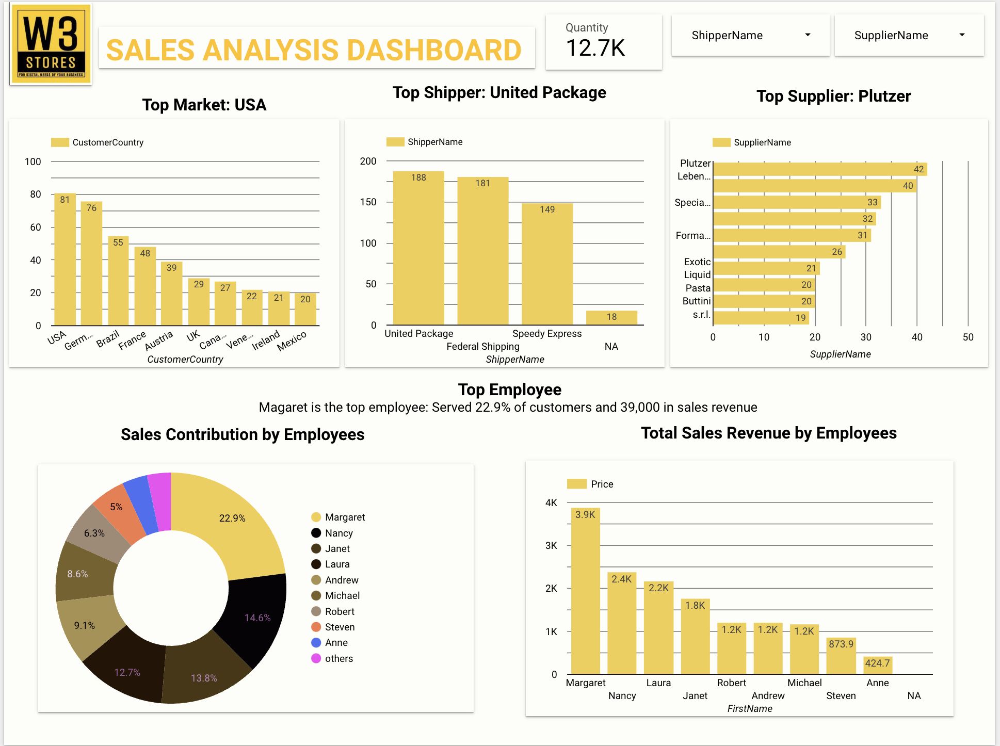

The financial industry uses Python extensively for quantitative analysis, ranging from understanding trading dynamics to risk management systems.
In this project, I used Python to conduct a financial analysis on an S&P 100 dataset by applying my Python skills to filter lists, summarize sector data, plot P/E ratios in histograms, visualize financial trends, and identify outliers.

In this project, I used Tableau prepare and analyze AirBnb dataset and created Dashboard for vizualization .

In this project, I used Google Data Studio to analyze W3 Store Datasets and creat a dashborad for clear insights.
In this project, I used the python libraries of Pandas, Matplotlib, and Seaborn to analyze and visualize Kenyan Hopital data by filtering, agggregating hiospital data using pivot tables, plotting bar and pie chats to identify the trend in health care facilities in the country..
In this project, I used PostgresSQL to analyze and generate statistsics about rides and paymets for SafeBoda. SafeBoda is a ride hailing application that links the user to nearby motorcycle-taxi operators, who are equipped with helmets and have been trained in first aid and road safety operating in Kampala, Uganda.